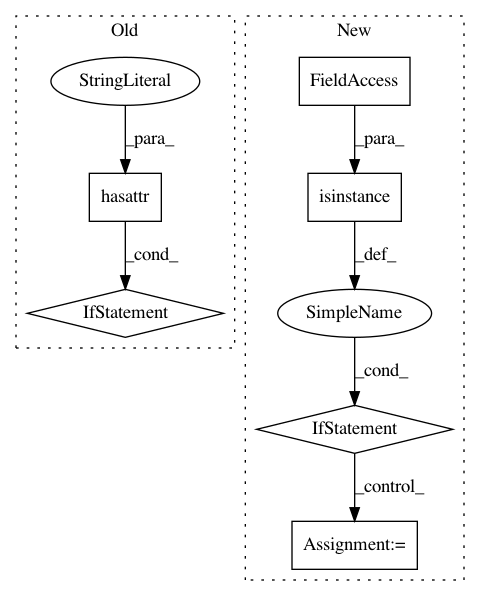

2443550ee6915daf6e7ff6306f3dc2922752ea4b,vis/backend/tensorflow_backend.py,,modify_model_backprop,#Any#Any#,41
Before Change
// Restore original model to keep upstream callers unaffected.
idx = 0
for layer in model.layers[1:]:
if hasattr(layer, "activation"):
layer.activation = original_activations[idx]
idx += 1
// Register modifier.
modifier_fn = _BACKPROP_MODIFIERS.get(backprop_modifier)
if modifier_fn is None:
raise ValueError(""{}" modifier is not supported".format(backprop_modifier))
modifier_fn(backprop_modifier)
After Change
for i, layer in utils.reverse_enumerate(modified_model.layers):
if hasattr(layer, "activation"):
layer.activation = tf.nn.relu
if isinstance(layer, _ADVANCED_ACTIVATIONS):
// NOTE: This code is brittle as it makes use of Keras internal serialization knowledge and might
// break in the future.
modified_layer = Activation("relu")
modified_layer.inbound_nodes = layer.inbound_nodes
modified_layer.name = layer.name
modified_model.layers[i] = modified_layer
// 3. Save model with modifications.
modified_model.save(model_path)
// 4. Register modifier and load modified model under custom context.
modifier_fn = _BACKPROP_MODIFIERS.get(backprop_modifier)
In pattern: SUPERPATTERN
Frequency: 5
Non-data size: 6
Instances
Project Name: raghakot/keras-vis
Commit Name: 2443550ee6915daf6e7ff6306f3dc2922752ea4b
Time: 2017-07-09
Author: ragha@outlook.com
File Name: vis/backend/tensorflow_backend.py
Class Name:
Method Name: modify_model_backprop
Project Name: scikit-image/scikit-image
Commit Name: bfabae7ec63350fda3ea445f594508ce057cfbe4
Time: 2017-04-24
Author: multicolor.mood@gmail.com
File Name: skimage/io/sift.py
Class Name:
Method Name: _sift_read
Project Name: scikit-learn-contrib/sklearn-pandas
Commit Name: 1c7a87e96c4b6180e423586193c26e5ccd2f6bfd
Time: 2015-08-02
Author: mahmoud@thehumangeo.com
File Name: sklearn_pandas/__init__.py
Class Name: DataFrameMapper
Method Name: transform
Project Name: vatlab/SoS
Commit Name: e34e8435c0f233797a48370c529fc802978a9bea
Time: 2016-09-30
Author: ben.bog@gmail.com
File Name: pysos/sos_eval.py
Class Name: SoS_String
Method Name: direct_interpolate
Project Name: nipy/dipy
Commit Name: 6c6570915dfe57012c23a25057c464e005bcede8
Time: 2012-07-09
Author: arokem@gmail.com
File Name: dipy/core/gradients.py
Class Name: GradientTable
Method Name: __init__